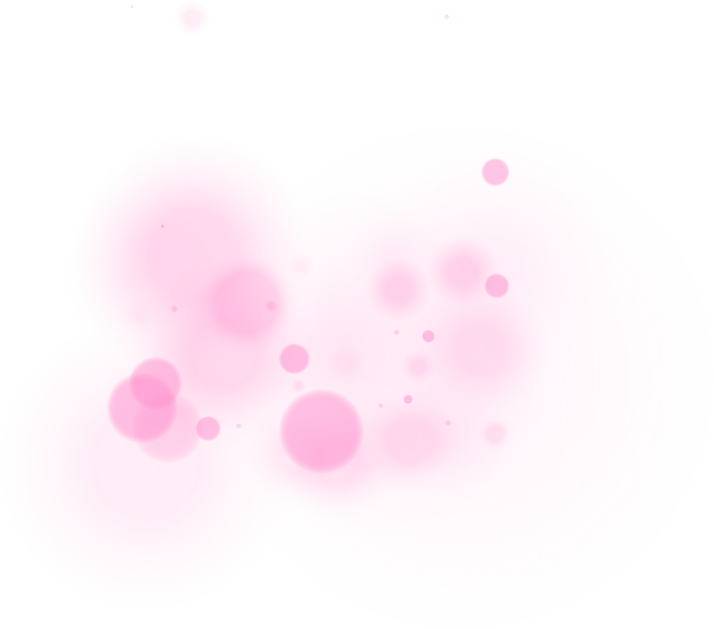
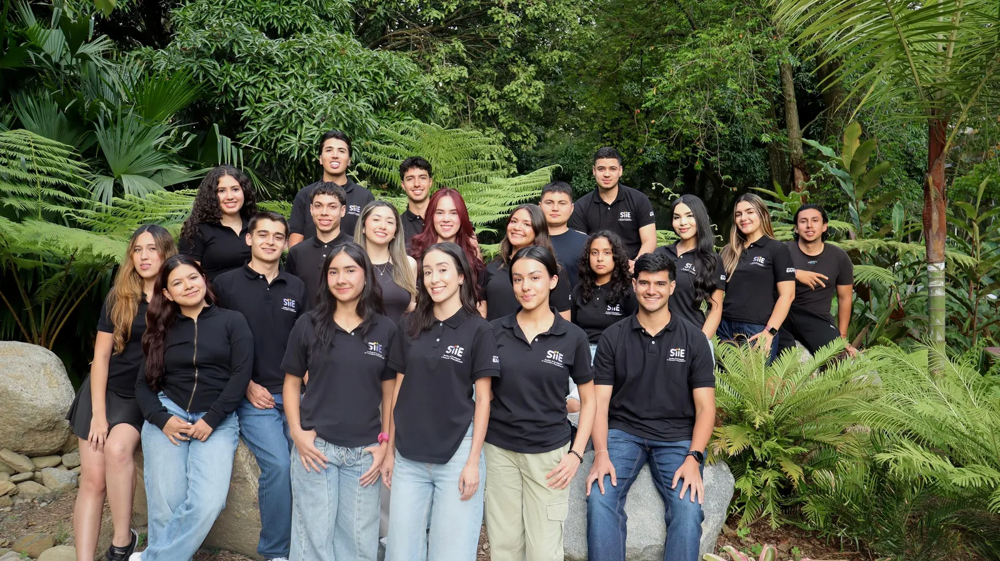
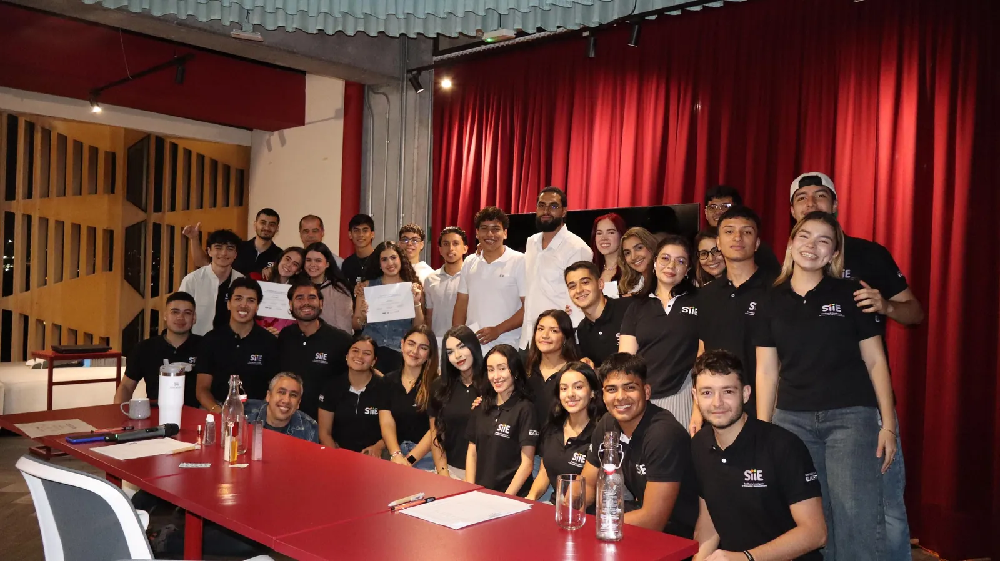

Haz florecer tu modelo de negocio.
Diseña tu modelo con el Flourishing Business Model Canvas: un lienzo que suma lo económico, lo social y lo ambiental. Te guiamos casilla por casilla, ves tu lienzo mientras lo llenas y lo descargas en PDF.
Un lienzo para negocios que crean valor para todos.
El Flourishing Business Model Canvas amplía el lienzo de modelo de negocio tradicional: además de clientes, costos e ingresos, te invita a pensar en las personas, la sociedad y el medio ambiente. En una sola hoja ves cómo tu proyecto genera valor y qué impactos deja.
- 1
Llena las casillas
Cada una trae una guía corta y ejemplos que puedes reutilizar.
- 2
Mira tu lienzo
Abre la vista previa cuando quieras, sobre la plantilla oficial en español.
- 3
Descárgalo o envíalo
Guarda tu lienzo en PDF y, si trabajas con el semillero, envíalo con un clic.

Investigamos para transformar ideas en proyectos con impacto.
El Semillero de Investigación en Innovación y Emprendimiento (SIIE) es un espacio de formación e investigación de la Universidad EAFIT. Usamos la investigación como herramienta para impulsar proyectos desde la innovación, el emprendimiento y la sostenibilidad.
Somos alrededor de 25 estudiantes de diferentes carreras que, con acompañamiento profesoral, trabajamos en equipo en iniciativas que fortalecen el ecosistema emprendedor. Cada año desarrollamos un proyecto de investigación diferente.
- Innovación
- Emprendimiento
- Sostenibilidad
- Investigación
Coachings
Cada año, durante una semana, el semillero enseña, orienta y acompaña a emprendedores en las primeras etapas de sus proyectos para impulsar el crecimiento de sus ideas. Así se vive:
- 1
Modelo de negocio
Los emprendedores definen y fortalecen su modelo con el Flourishing Business Model Canvas: la misma herramienta que encuentras en esta página.
- 2
Asesoría de expertos
Sesiones sobre finanzas, marketing, pitch y otras temáticas clave para sus proyectos.
- 3
Pitch y premio
Al cierre, en colaboración con OnGoing EAFIT, presentan su pitch y compiten por un premio.
